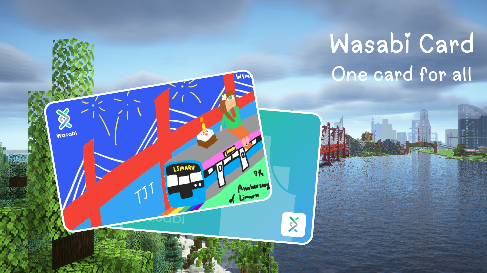

In the city of Limaru, the pancard serves as the standard integrated circuit (IC) card, providing residents and visitors with seamless access to its comprehensive travel network. Meanwhile, the neighboring TJT authority has issued its own specific smart card, known as the Wasabi card. Despite the different branding, both cards are built upon the exact same IC chip technology. This shared foundation ensures complete interoperability, allowing the Wasabi card to function flawlessly across all systems that accept the pancard, offering travelers a unified and convenient experience across both regions.
